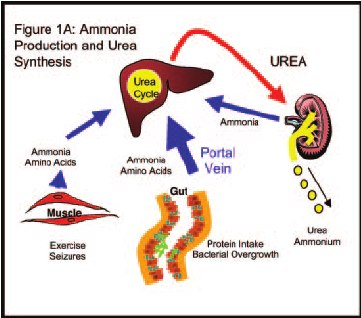
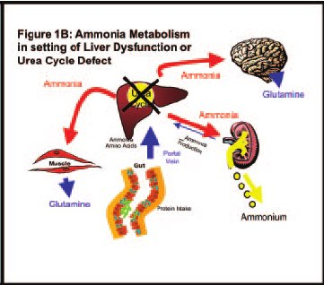

Day 3 · Topic 2
Hepatic Failure
Things to Bring Forward
Earlier Content This Topic Builds On
- Liver failure: a great understanding of what is going on in the liver. Portal hypertension and its complications, such as its effect on cardiac output.
- Hepatic encephalopathy: reviewed below, for the patient in the ICU.
Chronic Liver Disease and Acute Liver Failure
Chronic Liver Disease
- Leads to: acute liver failure, through an exacerbation, as heart failure exacerbates or chronic pancreatitis turns acute.
- End-stage liver disease: 50 to 100% mortality without a liver transplant.
Acute Liver Failure
- What it is: catastrophic damage to an otherwise healthy liver.
- Leads to: coagulation abnormalities and encephalopathy, both below. Can lead to chronic liver disease.
The ICU patient is in acute liver failure: truly acute, or chronic liver disease that has worsened.
Causes of Acute Liver Failure
- Acetaminophen overdose: the biggest. Failure can come 48 hours to 8 weeks later, especially with binge drinking. No acetaminophen for a hangover.
- Binge drinking and hepatotoxic drugs.
- A virus, such as hepatitis.
- Vascular, an acute loss of perfusion: a shock state, heart failure, an obstruction, a severe hypoperfusion episode.
- Pregnancy: HELLP syndrome or preeclampsia.
Sequelae of Liver Disease
What the Liver Does
- Metabolism of carbs, fats and proteins.
- Makes clotting factors, and removes active clotting factors.
- Vitamin and iron metabolism.
- Detoxification.
- Glucose levels: stores unused glucose, to release when needed.
Sequelae of Liver Disease
- Portal hypertension: can be seen in acute liver failure, though more associated with chronic liver disease. A concern either way. Its effect on cardiac output is below.
- Impaired metabolic processes: the liver is the most complex organ in the body, and liver failure disrupts every function above.
- Impaired bile formation and flow.
What portal hypertension is, and its complications, are taught in the GI review
Portal Hypertension and Cardiac Output
Vascular Underfilling
Blood cannot be returned effectively to the right atrium: a decreased fluid volume status.
Hyperdynamic Cardiac Output
Compensation: an overzealous cardiac output.
Cardiohepatic Syndrome
Severe liver failure can cause acute, severe heart failure.
Signs and Complications of Acute Liver Failure
Signs of Fulminant Hepatic Failure (Acute Liver Failure)
- Pointing to neurologic status, from the lost detoxification: chills, convulsions, decreased level of consciousness and coma, hyperexcitability, insomnia, irritability.
- Jaundice, lethargy, nausea and vomiting, sudden onset of high fever.
Complications of Acute Liver Failure
- Hepatic encephalopathy and cerebral edema: the biggest. They explain the neurologic signs above. See below.
- Coagulopathy: see below.
- Hypoglycemia and metabolic abnormalities: without the liver's glucose stores, hypoglycemia is more likely.
- Infection: a higher risk.
- Cardiopulmonary abnormalities: the hyperdynamic state, above.
- Acute kidney injury.
Hepatic Encephalopathy
What Hepatic Encephalopathy Is
- Altered neurologic status caused by a buildup of circulating toxins of hepatic origin, such as ammonia.
- Occurs in acute and chronic liver failure.
- Exact mechanism unclear: the liver is supposed to take these toxins out, and does not.
- Graded 1 to 4, least to most severe. Grades 3 and 4: a lot of long-term sequelae, and worse outcomes.
Measuring Hepatic Encephalopathy: Ammonia
- No exact lab test for hepatic encephalopathy. It is measured with ammonia.
- Shows the level of hepatic encephalopathy, not how severe the liver failure is.
- High levels: see Cerebral Edema below.


What causes hepatic encephalopathy, and what rising ammonia does, are taught in the GI review
Treating Hepatic Encephalopathy
- Lactulose, primarily, titrated to bowel movements and neurologic status.
- Goal: 2 to 4 bowel movements a day, and baseline or improved neurologic function.
- Other meds that can help: rifaximin, neomycin, metronidazole.
- Used in the acute patient. Chronic patients usually take lactulose daily.
Cerebral Edema
What Raises the Risk of Cerebral Edema
- Hepatic encephalopathy grade: up to 35% of patients at grade 3, up to 80% at grade 4.
- Ammonia above 150: increased risk.
- Ammonia above 200 mcg/dL: associated with cerebral edema and brain herniation.
Increased ICP is what happens with cerebral edema. Very close, focused and frequent neurologic assessments, watching for sudden symptoms.
Signs of Increased ICP
- Pupillary changes.
- Level of consciousness.
- Decreased motor response.
- Change in breathing pattern.
Increased ICP is taught in Neuro Assessment and Increased ICP
Coagulopathy
Coagulopathy in Acute Liver Failure
- INR above 1.5: very common.
- Thrombocytopenia: platelets below 150,000.
- Decreased production of clotting factors: II, V, VII, IX, X. The liver makes some of the clotting factors, so bleeding times are prolonged.
- Decreased circulating fibrinogen.
- High risk for bleeding: from falls, GI bleeds, variceal bleeding. The body cannot self-correct.
Coagulopathy is taught in Hematologic Issues in Critical Care
Variceal bleeding is taught in GI Critical Care Issues
| Treatment | What to Know |
|---|---|
| Vitamin K |
|
| Platelet transfusion |
|
| Fresh frozen plasma (FFP) |
|
| Packed red blood cells |
|
Blood products are taught in Hematologic Issues in Critical Care
Interventions and Treatment
| Intervention | What to Know |
|---|---|
| Assessment | Focused neurologic assessments, for hepatic encephalopathy. Abdominal assessments. |
| Labs | Ammonia, albumin, bilirubin, coags, liver enzymes. |
| Supportive therapy | Hemodynamic instability and decreased perfusion to organs. Nutrition. |
| Bleeding | Monitor bleeding and bleeding risk. |
| Ascites and encephalopathy | Manage both. Monitor fluid status: albumin production decreases, and fluid third spaces. |